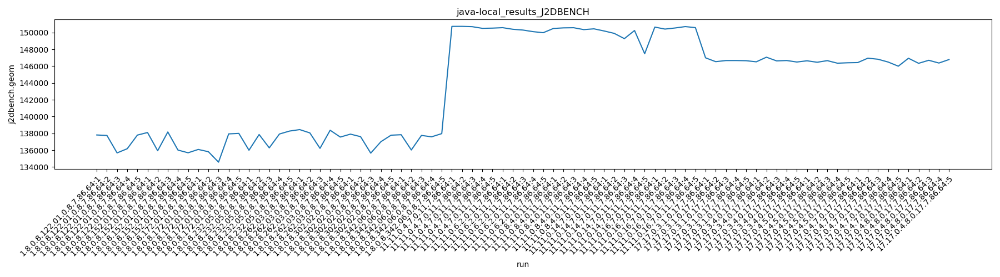
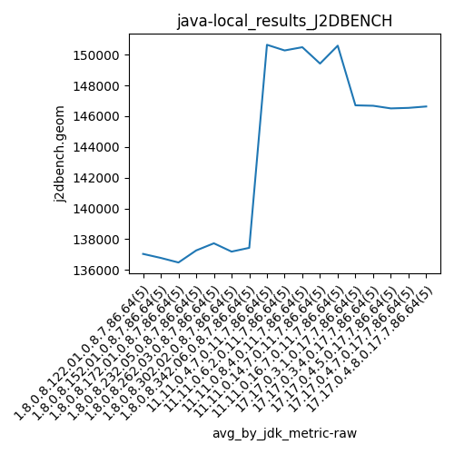
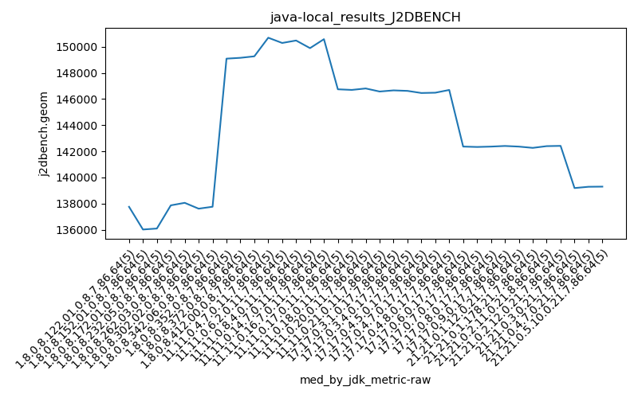
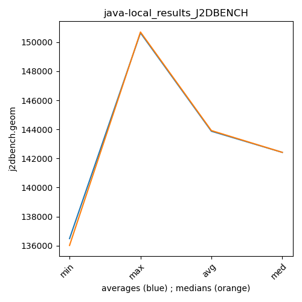

java- J2DBENCH
Context at bottom
/home/jvanek/git/benchmarks-in-nested-virtualisation-toolchain/final_results/local_results/local_results_DACAPO
java-
J2DBENCH
/home/jvanek/git/benchmarks-in-nested-virtualisation-toolchain/final_results/local_results/local_results_RADARGUNs1
java-
J2DBENCH
/home/jvanek/git/benchmarks-in-nested-virtualisation-toolchain/final_results/local_results/local_results_SPECJBB
java-
J2DBENCH
/home/jvanek/git/benchmarks-in-nested-virtualisation-toolchain/final_results/local_results/local_results_RADARGUNs3
java-
J2DBENCH
/home/jvanek/git/benchmarks-in-nested-virtualisation-toolchain/final_results/local_results/local_results_J2DBENCH
java-
J2DBENCH
local_results_J2DBENCH
final score
Expected number of java- JDKs: 19
1st avgmed_alljdks_metric:
/home/jvanek/git/benchmarks-in-nested-virtualisation-toolchain/final_results/result_processing.py /home/jvanek/git/benchmarks-in-nested-virtualisation-toolchain/final_results/local_results/local_results_J2DBENCH j2dbench.geom False
values: [137813, 137755, 135679, 136177, 137798, 138104, 135937, 138169, 136016, 135694, 136091, 135821, 134580, 137942, 138000, 135999, 137865, 136279, 137926, 138278, 138452, 138058, 136222, 138375, 137564, 137912, 137611, 135652, 137010, 137786, 137843, 136029, 137759, 137594, 137974, 150730, 150734, 150697, 150500, 150524, 150578, 150389, 150295, 150106, 149978, 150483, 150554, 150572, 150347, 150440, 150186, 149900, 149274, 150242, 147478, 150648, 150411, 150542, 150707, 150585, 146991, 146534, 146666, 146669, 146648, 146516, 147066, 146627, 146670, 146492, 146637, 146465, 146656, 146352, 146402, 146426, 146950, 146822, 146488, 145996, 146941, 146338, 146698, 146371, 146788]

Expected number of iterations: 5
final number of values: 85 out of 95
Pass rate: 89.5%
values: (134580, 150734, 143786.7411764706, 146488)

** accuracy from all jdks and runs
more is better
MIN: 134580
MAX: 150734
AVG: 143786.7411764706
MED: 146488
Relative differences 1:
MIN-MAX: 11.0 %
MIN-AVG: 6.0 %
MIN-MED: 8.0 %
MAX-MIN: -12.0 %
MAX-AVG: -5.0 %
MAX-MED: -3.0 %
AVG-MED: 2.0 %
stored to java-.properties. sort | uniq that!
2nd avgmed_by_jdk_metric:
values: [137044.4, 136784.0, 136486.8, 137269.4, 137734.2, 137194.2, 137439.8, 150637.0, 150269.2, 150479.2, 149416.0, 150578.6, 146701.6, 146674.2, 146502.4, 146536.4, 146627.2]

values: [137755, 136016, 136091, 137865, 138058, 137611, 137759, 150697, 150295, 150483, 149900, 150585, 146666, 146627, 146465, 146488, 146698]

values: (136486.8, 150637.0, 143786.74117647056, 146536.4)
values: (136016, 150697, 143885.82352941178, 146488)

** accuracy from all jdks where runs were avged
more is better
MIN: 136486.8
MAX: 150637.0
AVG: 143786.74117647056
MED: 146536.4
Relative differences 1:
MIN-MAX: 9.0 %
MIN-AVG: 5.0 %
MIN-MED: 7.0 %
MAX-MIN: -10.0 %
MAX-AVG: -5.0 %
MAX-MED: -3.0 %
AVG-MED: 2.0 %
stored to java-.properties. sort | uniq that!
** accuracy from all jdks where runs were medianed
more is better
MIN: 136016
MAX: 150697
AVG: 143885.82352941178
MED: 146488
Relative differences 1:
MIN-MAX: 10.0 %
MIN-AVG: 5.0 %
MIN-MED: 7.0 %
MAX-MIN: -11.0 %
MAX-AVG: -5.0 %
MAX-MED: -3.0 %
AVG-MED: 2.0 %
stored to java-.properties. sort | uniq that!
/home/jvanek/git/benchmarks-in-nested-virtualisation-toolchain/final_results/local_results/local_results_JMH
java-
J2DBENCH
pass rates:
local_results_J2DBENCH=89.5%
Context:
- local_results
- J2DBENCH